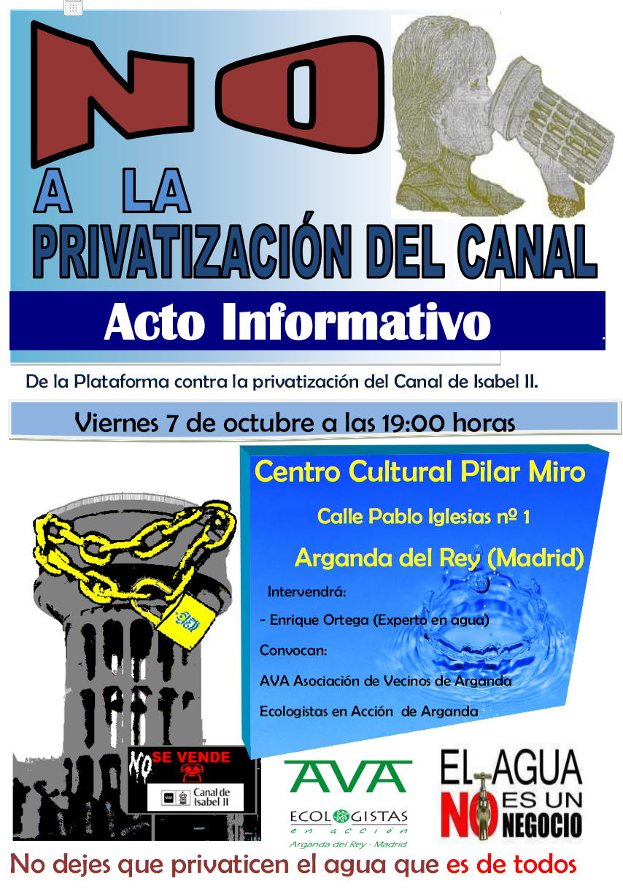

Como ya os adelantamos este VIERNES 7 DE OCTUBRE a partir de las 19 horas en el Centro Cultural PILAR MIRÓ de Arganda del Rey, la Plataforma contra la Privatización del Canal de Isabel II realizará un acto informativo sobre esta materia, cuyo cartel os adjuntamos, en colaboración con Ecologistas en Acción y la Asociación de Vecinos de Arganda. NO FALTÉIS OS ESPERAMOS
Tras el espejismo estival retorna lo cotidiano, la rutina y la vuelta a lo real.
Todos volvemos a nuestros quehaceres y los niños no son una excepción, después de tres meses de parón veraniego vuelven los madrugones, las mochilas, los deberes, las actividades extraescolares…y como no, la situación que dejamos en Junio, aulas hasta los topes, eliminación de espacios como laboratorios que se reconvierten en aulas, la patente necesidad de más centros públicos de primaria y secundaria, el CEIP Benito Pérez Galdós aún por finalizar, y el CEIP San Juan Bautista en nuevo terreno sin comenzar. A todo ello se une la huelga de profesores en secundaria por el recorte de docentes, su ampliación de jornada semanal, por la pérdida de refuerzo educativo…etc.
Las familias de momento preocupadas por como afrontar el enorme, terrible y abusivo gasto escolar de sus hijos, absolutamente desorbitado; además la cuantía de las becas que ya era escasa aún es más reducida este año.
Desde AVA como colectivo implicado en la defensa de la Educación Pública, y que viene denunciando durante años el sistemático recorte de recursos al que se le somete por parte de la Administración nos preguntamos, ¿hasta cuándo padres y madres vamos a seguir mirando hacia otro lado?, ¿hasta cuando los responsables políticos seguirán permitiendo que se a vapulee a la escuela pública y por tanto los derechos y la formación de nuestros hijos?, ¿hasta cuando la Administración seguirá recortando recursos a la Educación Pública en pro de la privada y concertada?
Resulta curioso que en nuestra vida cotidiana y ante cualquier abuso, provenga de dónde provenga, compañías de telefonía, restaurantes, agencias de viajes, compras por Internet…etc, nos quejemos, protestemos, pongamos el grito en el cielo, reclamemos…y en temas tan cruciales como la Educación de nuestros hijos demos por sentado que las cosas son como son y como mucho comentemos la situación tomando un café.
No olviden que sus hijos tienen unos derechos y que como madres y padres han de velar por que no les quiten lo suyo y se lo regalen a otros, por impedir que se les continúe recortando recursos en su formación, por reivindicar que el papel de las familias como comunidad educativa no se circunscribe a comprar los libros y el material escolar y acatar las decisiones de unos y de otros como meros espectadores, no pueden quedarse al margen.
Por medio de la presente queremos haceros partícipes de la presentación esta semana de dos obras literarias en nuestra localidad:
.- “Levantemos el corazón” Segunda obra de Jose Luis Sáez, cuya presentación se llevará a cabo el día 31 de Mayo a las 19:30 horas en el centro de Mayores de Arganda del Rey, acto en el que el propio autor pondrá voz a su obra, pudiendo además el público asistente proceder a su compra y a obtener la rúbrica de su creador.
.- El Carrascal “Recuerdos de una época” escrito por Julián Delgado y Magüi de León, nos trasladará a las vivencias de una generación y de su instituto, con anécdotas y vivencias recabadas de sus protagonistas. Su presentación se llevará a cabo el próximo jueves 2 de Junio a las 19:30 horas en el Centro Integrado de la Poveda (Arganda del Rey), colaborando la Asociación de Vecinos de Arganda y el Ayuntamiento de la localidad, pudiendo adquirir la obra y la dedicatoria de sus autores.
Dos nuevas obras que tienen como referente nuestro municipio, bien por sus autores bien por su temática, que no podéis dejar de disfrutar.
Esperamos poder contar con vuestra presencia.
Mónica G. Crespo. Presidenta AVA.